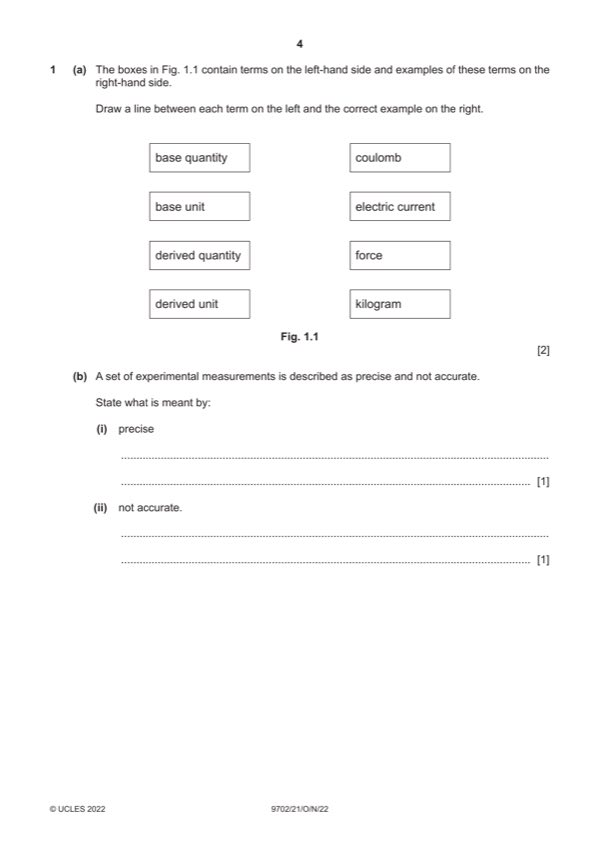

Question 1

Original paper page 4
Part 1(a) — solution
Answer: C1
- [A1] Obtain/use: all four joined correctly
Mark points
- [A1] Obtain/use: all four joined correctly
Part 1(b)(i) — solution
- [B1] Obtain/use: the measurements have a small range
Mark points
- [B1] Obtain/use: the measurements have a small range
Part 1(b)(ii) — solution
- [B1] Obtain/use: (average of the) measurements not close to the true value
Mark points
- [B1] Obtain/use: (average of the) measurements not close to the true value
Part 1(c)(i) — solution
- [A1] Obtain/use: = 6%
Mark points
- [A1] Obtain/use: = 6%
Part 1(c)(ii) — solution
- [A1] Obtain/use: absolute uncertainty = (6 / 100) 15.0
Mark points
- [A1] Obtain/use: absolute uncertainty = (6 / 100) 15.0